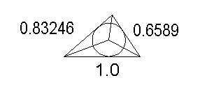
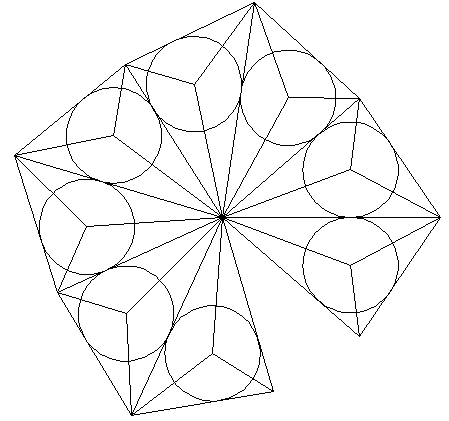
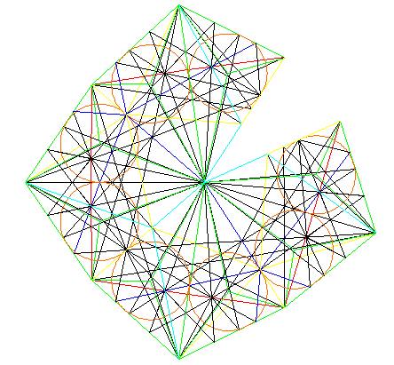
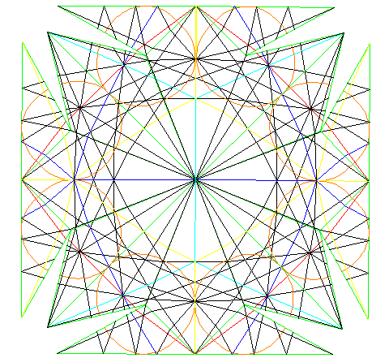

The 48 polyhedron has the following triangle edge factors.
With this info, we can make a "template" drawing from which you can assemble the 48 LCD polyhedron. You will need 6 of these to put the polyhedron together. The circles indicate the cones of light coming out of the polyhedron. The 3 extra lines from the circle center out to the vertices are drawn to show you the irregular tetrahedron "cap" placed on each of the 48 LCD triangles.
When we draw in all the great circles of both the Icosahedron and the VE (cuboctahedron) we get the following template. The dark blue lines show the Icosahedron, the light blue lines show the regular dodecahedron and the red lines show the VE.
When assembling the 48 polyhedron from this colored layout, make sure that the red lines match up correctly at the edges.
For the full 144 polyhedron, use the followng template.
The resulting polyhedron should look something like the following. (As far as the "hills and valleys" it should look like this. The colors are of course different.)


Usage Note: My work is copyrighted. You may use my work but you may not include my work, or parts of it, in any for-profit project without my consent.